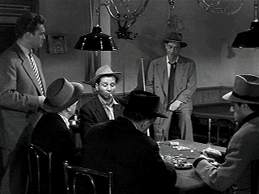

| Rififi/B+,B+ |
| Criterion/1955/118/FS 1.33 |
A classic heister, Rififi is polished to diamond brilliance by director/writer Jules
Dassin. It really wasn't an especially new formula when Dassin used it in Rififi: a tough
criminal is released from prison and is quickly mired right back in the quicksand of crime. But
Dassin does make every move count and every character accountable. Even the typical subplot,
the old girlfriend who's taken up with another hood, is integrated into the plot perfectly by
Dassin and company.
When Tony le Stéphanois loses one too many hands in a poker game, he
calls Jo le Suedois for some dough. Jo seems like a terrific family guy when we first meet him, but
we soon find out there's more on his mind. Jo and his friend Mario are planning a jewel robbery,
but Tony is the one they need to lead the heist and refine the plan. The safe in the jewelry store
needs the touch of a master, the womanizing Italian Cesar le Milanais, who is contacted in Italy
and readily accepts the proposition.
 |
| No cash, no cards! ©Criterion |
Adapted from the novel by August Le Beton, the outstanding script is penned by Dassin together with
Le Beton and Rene Wheeler. Dassin's visual command is sterling adding to the excitement and danger
in Rififi. Dassin times Rififi for perfect intensity. The film moves quickly, like a cat
burglar in the night, stealthily graceful, dangerously silent. The thirty-minute heist with no
dialogue is quite brilliant. The only detail that disturbed me was the cause for the ultimate
failure of the heist. But I am being picayune.
I have always felt French film gangsters are some of the toughest guys
you'll ever come across on celluloid. Jean Servais meets the standards of tough and nasty.
Servais's Tony le Stéphanois looks like a guy would slit your throat for a small coin, especially
if there was some criminal principle involved. His voice is like a two day beard. Carl Möhner as
Jo looks exactly the opposite and the contrast is effective. Robert Manuel's Mario Farrati is a
happy go lucky soul while Cesar le Milanais is played with oily delight by Jules Dassin himself.
The elegant black and white cinematography by Philippe Agostini is
composed with a beautiful eye. George Auric's score adds the perfect rhythms to the
outstanding visual style.
Criterion has delivered
a beautiful looking black and white transfer. Element damage crops up prominently late in the film,
but credit Criterion for somehow managing to minimize the damage without softening the image. Ten
points here for damage control. The removable white English subtitles are easy to read and are in
nice proportion to the overall image. The mono soundtrack appears free from annoying hiss.
The special edition includes an excellent video interview with director Jules
Dassin made a couple of years ago when Dassin was in New York for a retrospective of his work.
Dassin's remembrances of the blacklist and the impact it had on so many lives is sad commentary,
indeed, but the man does not appear bitter. He's a a survivor and we are lucky to have some of the
films he made after his career was road-blocked by ignorance and fear.
|
|
|
|


A film of extraordinary power that pulls no punches, The Grifters is not to be missed.
Hungry characters on the con, the short con, the long con, the self con.

The
Movie Poster Archive include extensive poster images from the films of stars like Susan Hayward,
Kirk Douglas, Katharine Hepburn and many more. Our featured star is Robert Mitchum

Selections from the Feature Archive
include articles on Akira Kurosawa, Frank
Darabont, Blonde Bimbos, Hollywood Street Gangs, or Vietnam: The
Hollywood Pariah, and many more....

Hail, Hail, the Gangs in Hollywood
From Angels with Dirty Faces to West Side Story to
Menace II Society, Hollywood has depicted youth gangs as reflections of the times.
 
Films of the Golden Age is
a showcase for special feature articles on film
people and Hollywood history, all illustrated with beautiful photographs and classic movie art.

Classic Images on classic films, featuring news, reviews, obituaries, film convention reports,
and detailed articles on film people, from the most famous to the most obscure
|